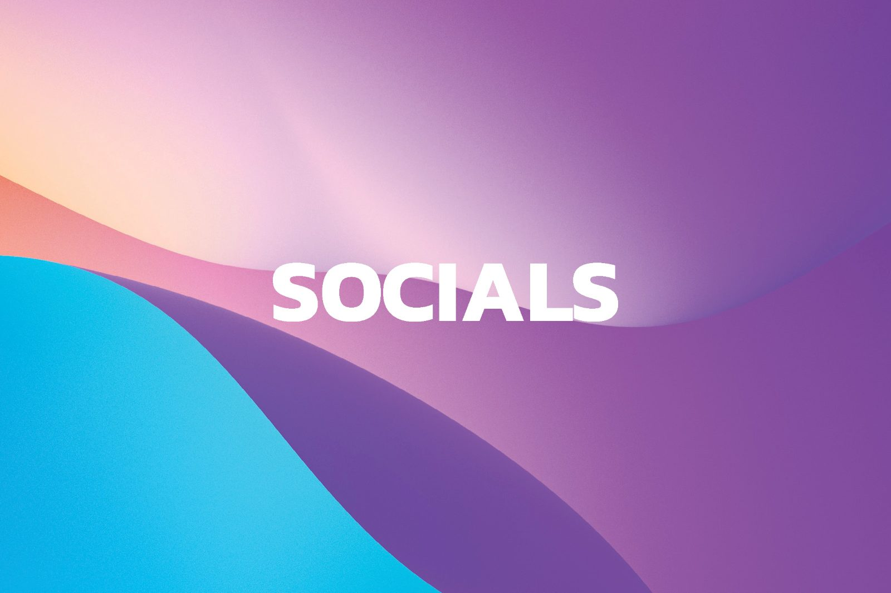
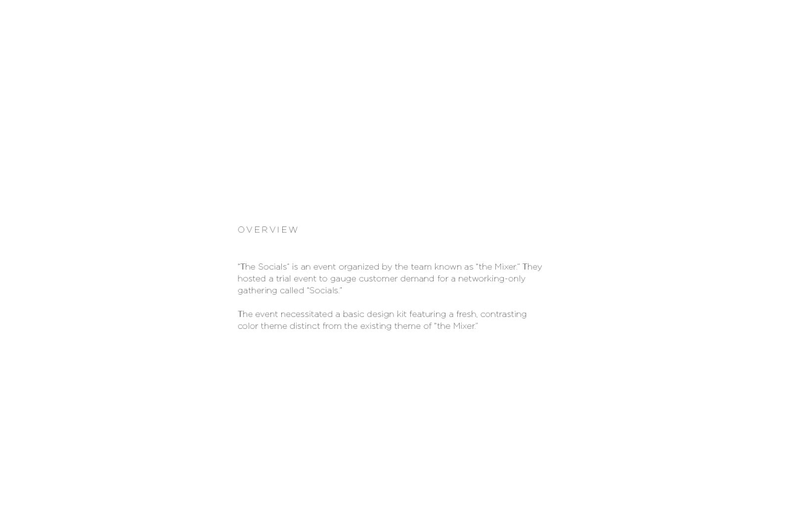
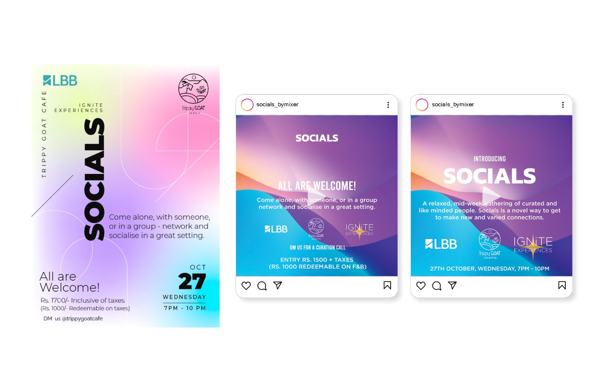
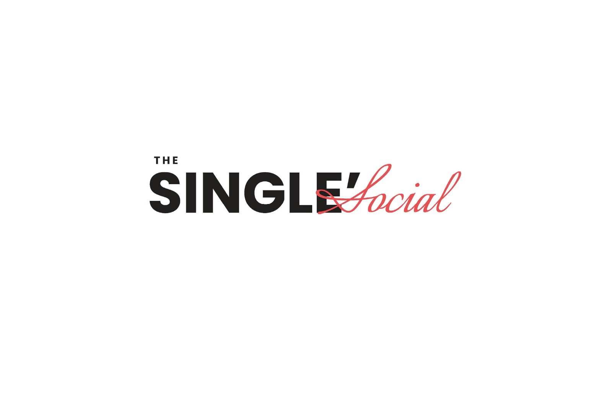
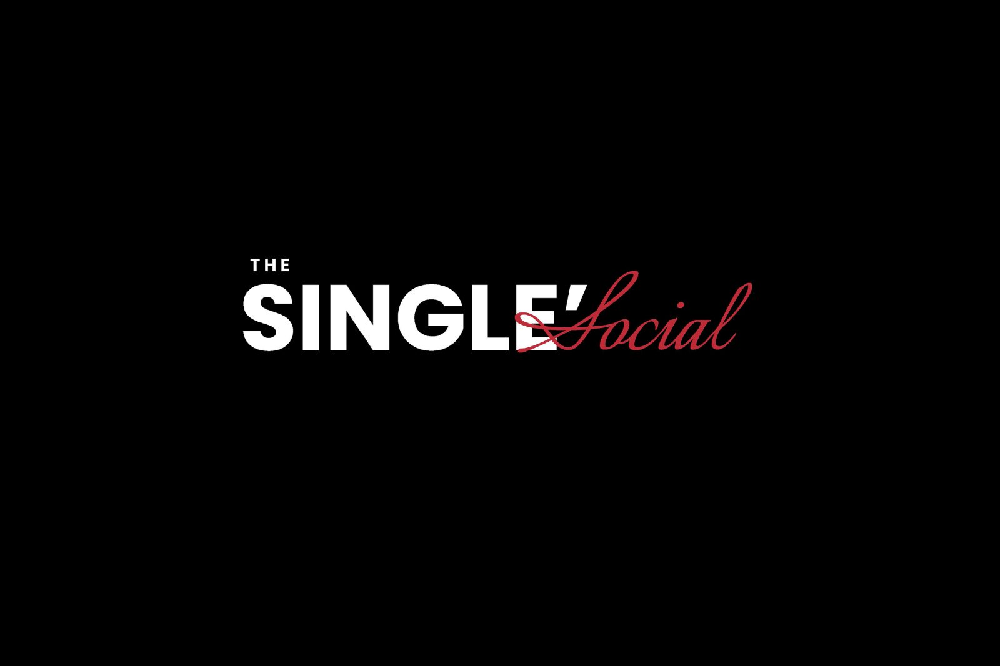
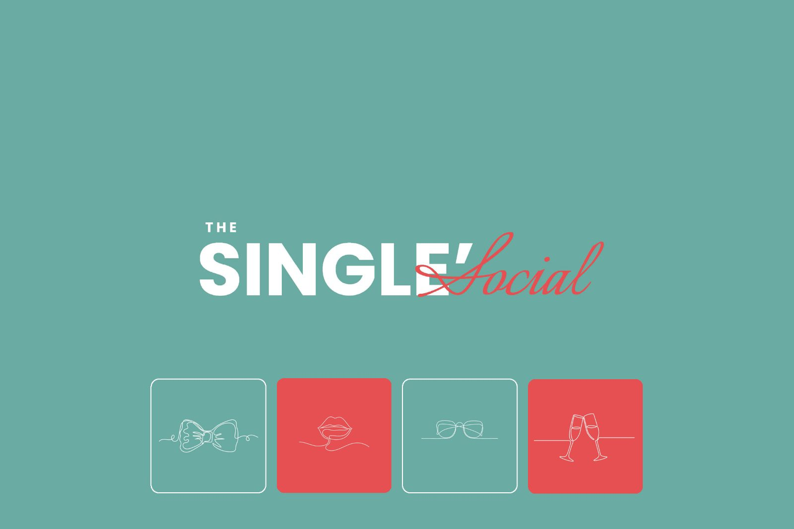
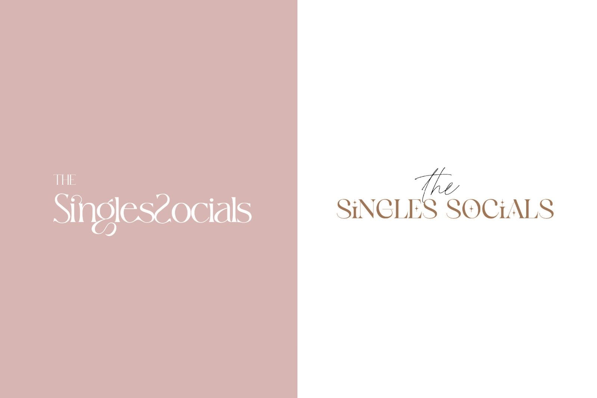
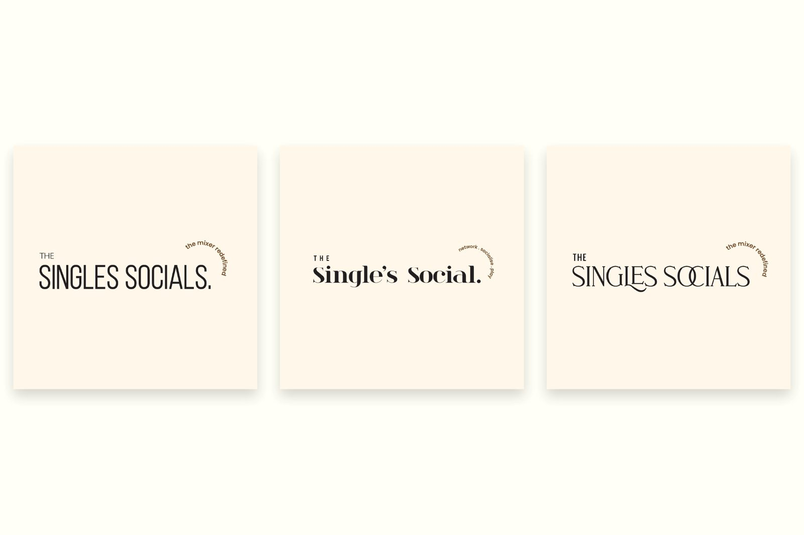

Socials
“The Socials” is an event organised by the team known as the Mixer. They hosted a trial event to gauge demand for a networking-only gathering, which needed a design kit with a fresh, contrasting colour theme distinct from the existing Mixer identity.
Distinct from the Mixer, but recognisably from the same team.
The Mixer's own identity is dark and gold. Socials had to read as a separate proposition — networking only, no other draw — so the kit moves to a cyan-to-violet gradient that shares none of the parent palette while keeping the same typographic discipline.
The campaign ran with LBB, and the assets carry an open invitation: come alone, with someone, or in a group. A second strand in the document explores The Single's Social — a related event identity taken through wordmark, colourways and an icon set.
Eight pages, front to back.







